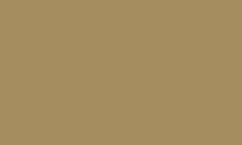
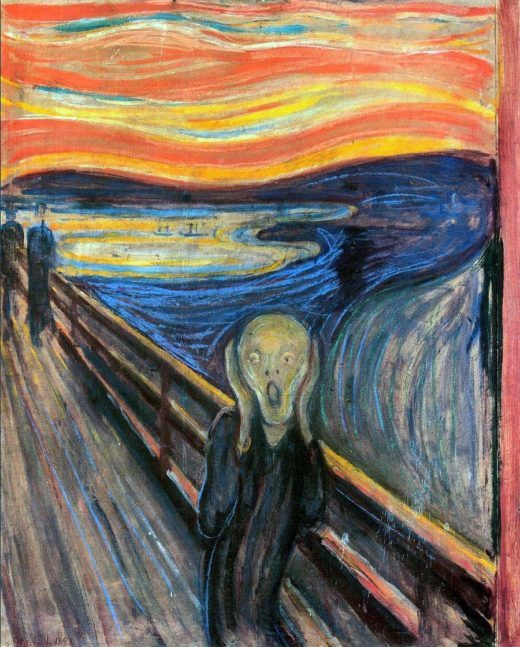

🔎Tips
사진을 크게보고싶다면 사진을 클릭하세요!

모나리자(Mona Lisa)
모나리자
화가 : 레오나르도 다 빈치
레오나르도 다 빈치의 대표작을 넘어서
전 세계에서 가장 유명한 미술품이고,
현재 프랑스 파리
루브르 박물관에 전시 되어 있다.
이 그림은 뭐라고 딱 잘라 말할 수 없는
미묘한 미소가 특징인데,
입을 보면 웃고 있는데 눈만 보면 알 수 없다.
무제(untitled)
무제
화가 : 장 미셸 바스키아
'1200억짜리 낙서'로 불리는 이 작품은
푸른색 바탕에 흑인을 연상시키는 검은색,
그리고 빨강, 노랑, 흰색을 덧칠해
마치 악마를 묘사한 듯한 느낌을 준다. 여기에는 미국 사회의 인종차별,
현대인의 온갖 욕망과 위선을
강렬한 터치와 색채 미학으로 승화한
바스키아의 의도가 뚜렷하게 드러나 있다.
뭉크(The Scream of Nature)

절규
화가 : 에드바르 뭉크
19세기 말쯤에 그려진 작품.
화자의 절망적인 심리상태를
역동적인 곡선으로 표현했다.
공포스러우면서도 놀라는 표정과
흘러가는 듯한 배경을 그려 내어
지금도 여러 모로 회자되고,
많이 패러디되는 뭉크의 대표 작품이다.